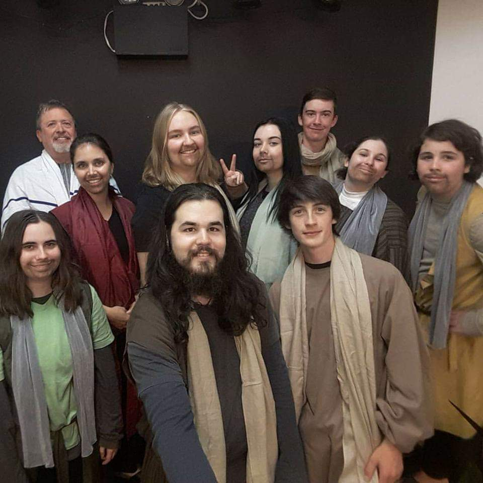
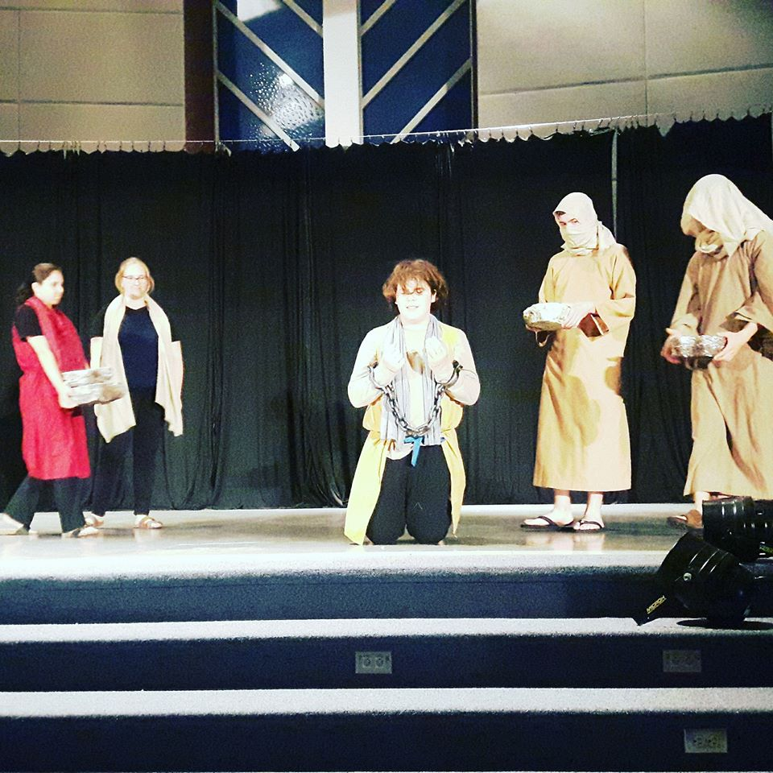

Daniel Astley's Portfolio
|
Theatre Experience
|
Video Projects
|
Audio Projects
|
Scripts and Short Stories
|
Contact
Spiritus Theatre: Acts of the Apostles

Dani played the parts of pharisie, crowd, executioner and other roles. During this show Dani showed his ability to be versitile as an actor. The show ran August of 2017 and was directed by Robbie Nagle

You Have reached the bottom of This page!!